Discover the beauty of various tourist spots with our comprehensive guide.
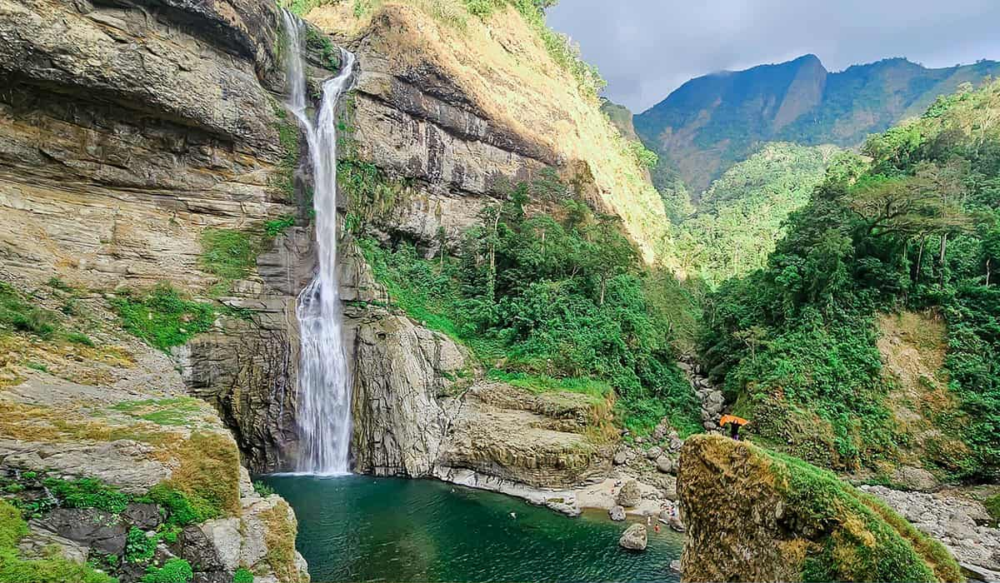
"The tallest waterfall in Ilocos Region, Aw-asen Falls, is located in Sto. Rosario, Sigay, Ilocos Sur.
The area of the falls is remote that keeps the place away from pollution, the water comes from a spring uphill,
and it is so fresh that you can even drink from it.
The water basin of the falls runs deep and still during summer,
non-swimmers can enjoy the place floating on a raft
its waters might get harsh and cruel as it appears during rainy season
but gives a majestic view of nature that seems to urge for a photograph."
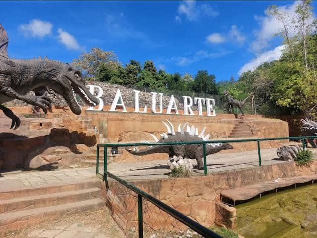
"This unique destination features a zoo with various animals, located within the historical architecture of Vigan."
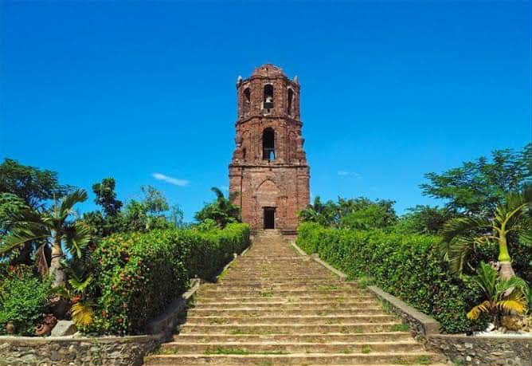
" Part of the Santuario de Nuestra Señora de la Caridad (Bantay Church), the Bell Tower provides a strategic viewpoint.
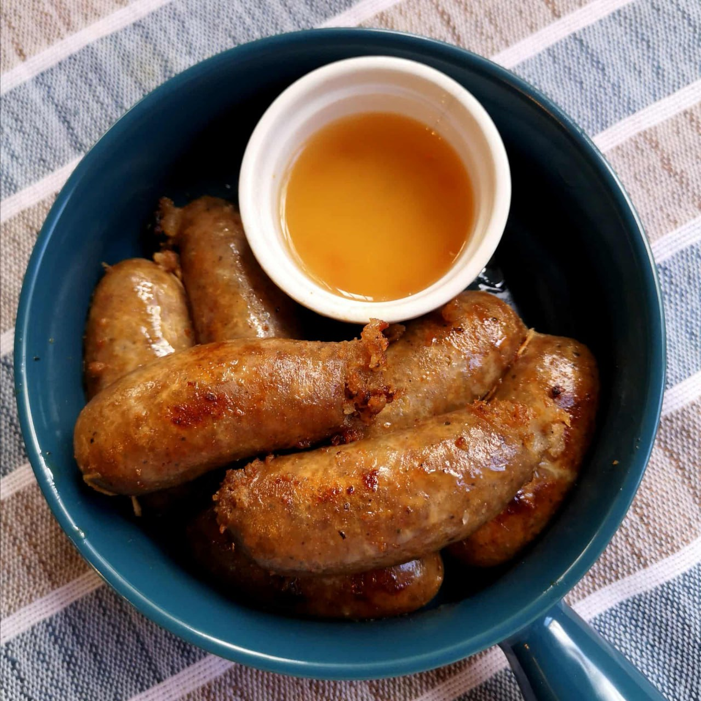
Description:Vigan Longganisa is a garlicky, tangy, and slightly salty native sausage made from ground pork and native Ilocano spices. It's distinct for its strong vinegar and garlic flavor and is often served with rice and egg (longsilog). These sausage are handmade and often sold in bundles in local markets.
price:PHP 150/dozen
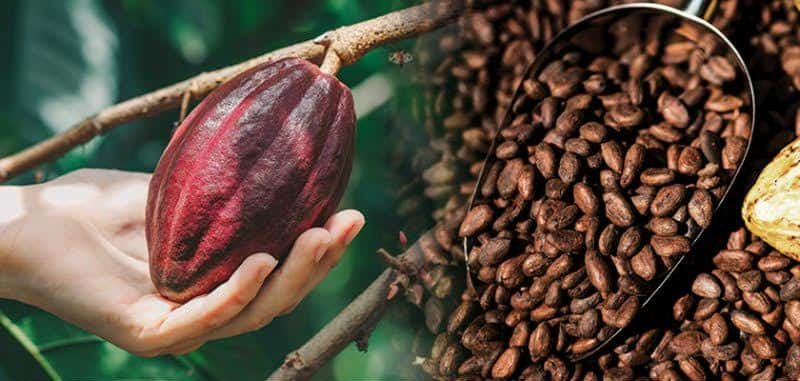
Description:Cacao is the main ingredient in chocolate production and there is no other crop or product that can substitute for it, in as far as chocolate production is concerned.
price:PHP 150/200
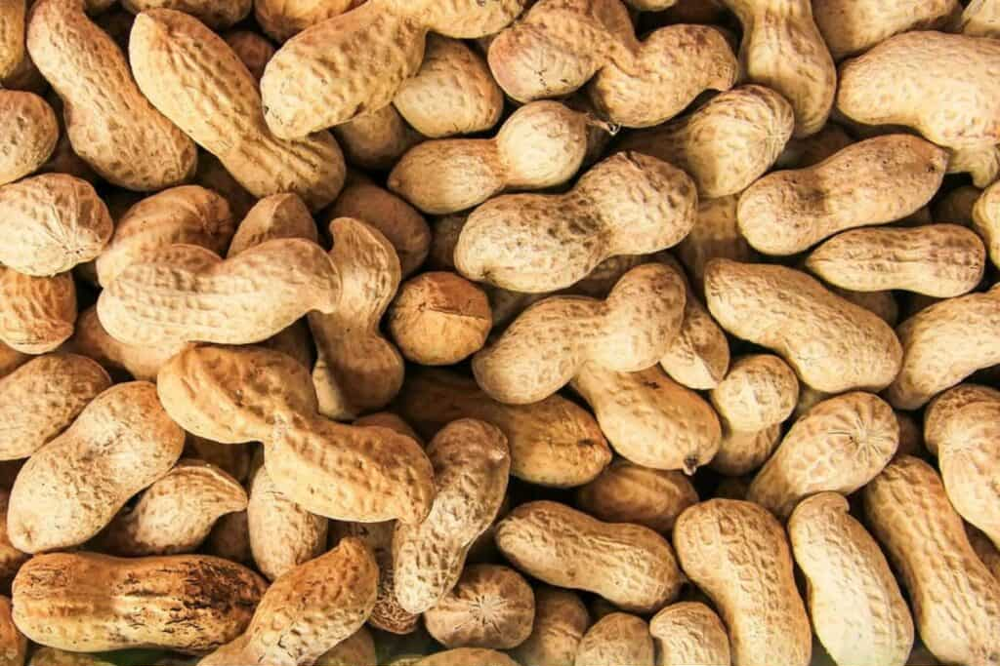
Description:Peanuts, known locally as "mani," are a significant crop in the Ilocos Region, with the Ilocos Pink variety being widely planted and a key example of locally-bred varieties.
price:PHP 100/150 per kilo
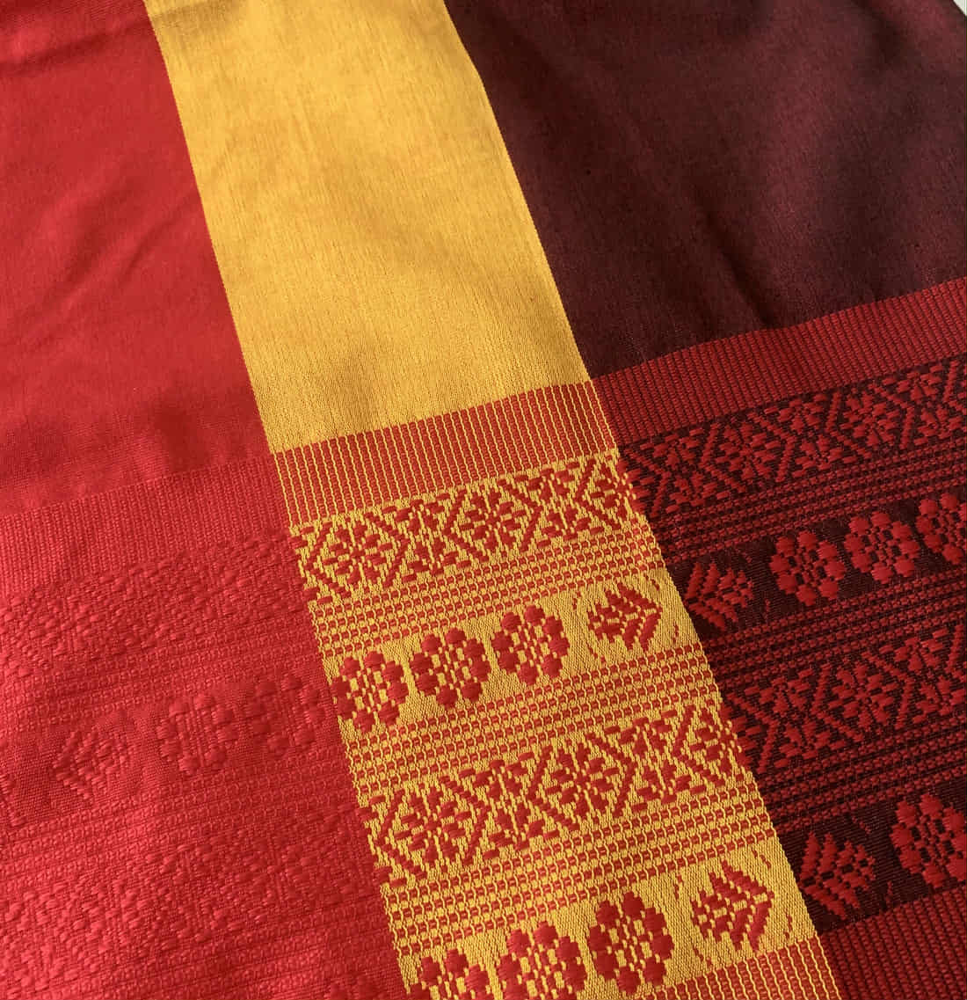
Description:Inabel fabric is made of cotton and may be plain or patterned. The abel cloth is well known and much loved for its softness, beautiful designs, and strength.
price:PHP 2,000
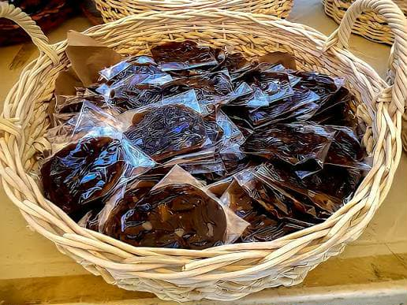
Description:This is the most famous variants of calamay. The color and the sweetness even reach international market through trade fairs. The color derived from its ingredients brown sugar or mascovado.
price:PHP 100
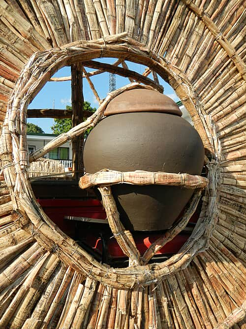
Description:The drink holds significant cultural importance, being a part of Ilocano rites and traditions, and its prohibition under Spanish rule led to the Basi Revolt of 1807.
price:PHP 60/100ml bottle
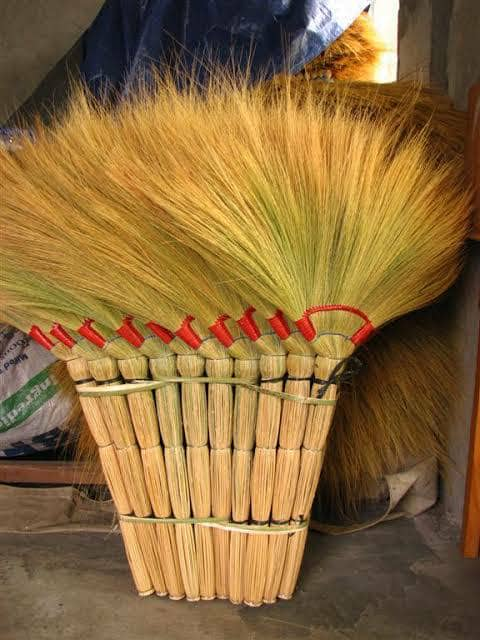
Description:In Ilocos, the traditional soft broom is known as walis tambo, a hand-crafted tool made from the flower stalks of the Tiger grass.
price:PHP 150/200
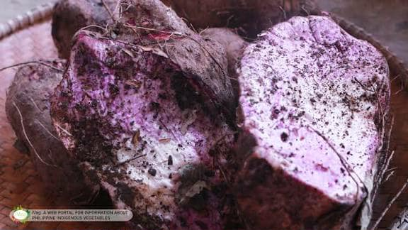
Description:Ube, a Filipino purple yam, is indigenous to the Philippines and is a prized product of Ilocos Sur, particularly in the town of Sugpon.
price:PHP 100/150 per kilo
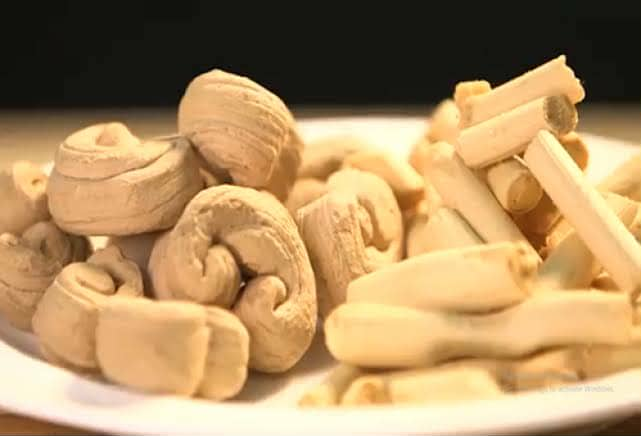
Description:In Ilocos, balicucha is a traditional sugarcane candy, also called balikutsa or balicutia, made from caramelized sugarcane juice that is pulled and twisted into a creamy.
price:PHP 50/100
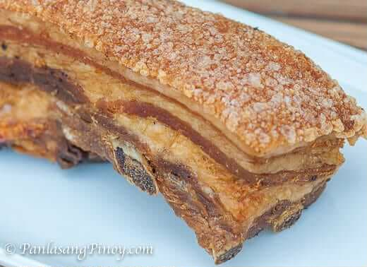
Description:Bagnet is deep-fried crispy pork belly, similar to lechon kawali but cooked twice for extra crunch. It is a popular Ilocano delicacy known for its golden-brown skin and juicy meat. Often paired with sukang Iloko (native vinegar), It's favorite pasalubong.
price:PHP 200/300 per kilo
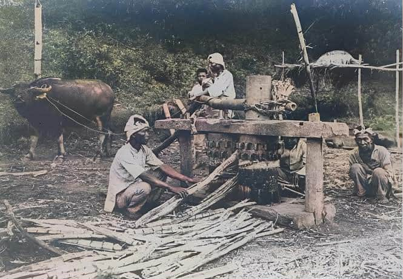
Description:The traditional milling process, called dapil, uses a dadapilan (a cylindrical mill) powered by a carabao or cow to extract the juice, which is then processed in vats.
price:PHP 100/150
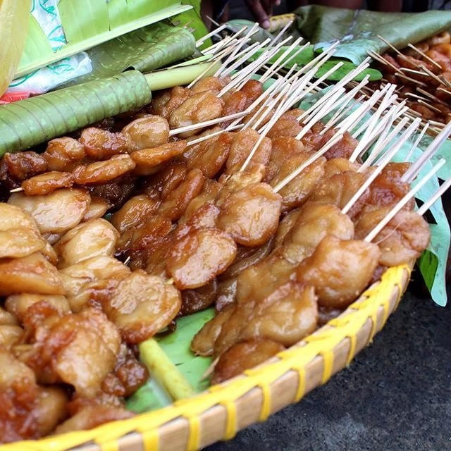
Description:Kaskaron, also known as cascaron or carioca, is a traditional Filipino doughnut made from glutinous rice flour and grated coconut.
price:PHP 100/150